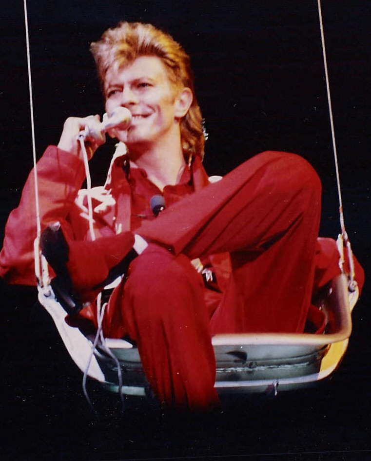
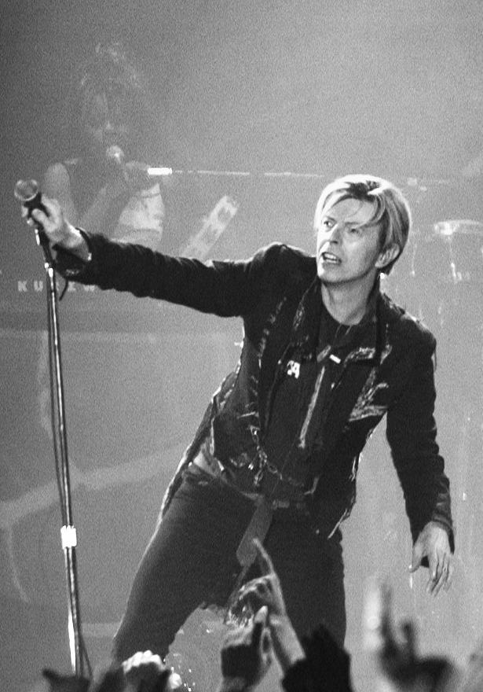

David Bowie (IPA: /ˈdeɪ.vɪd ˈboʊ.i/)[4], pseudonimo di David Robert Jones (Londra, 8 gennaio 1947 – New York, 10 gennaio 2016[5]), è stato un cantautore, polistrumentista e attore britannico.
La passione per la musica portò Bowie a imparare a suonare il sassofono quando era ancora giovanissimo.[6] Dopo aver partecipato alla formazione di varie band, raggiunse il successo da solista nei primi anni settanta, attraversando cinque decenni di musica rock e conquistandosi la fama di aver perfezionato il genere glam rock.[7] Significative e proficue sono state le collaborazioni con Tony Visconti e Brian Eno,[8] reduci dal glam rock dei primi settanta, con i quali instaurò una solida e profonda amicizia che durò svariati anni.[9][10]
Pur non essendo le sue attività principali, Bowie si dedicò anche alla pittura e al cinema, lavorando come attore con registi come Martin Scorsese, David Lynch e Christopher Nolan. Tra i vari film in cui recitò, vi sono L'uomo che cadde sulla Terra, Furyo, Miriam si sveglia a mezzanotte, Absolute Beginners, Labyrinth, Basquiat, The Prestige e Il mio West.
Con circa 140 milioni di album venduti in vita, David Bowie figura tra gli artisti con il maggior numero di vendite[11] e nel 2007 fu indicato dalla rivista Forbes come il quarto cantante più ricco al mondo.[12] Ampiamente considerato uno degli artisti musicali più influenti del XX secolo,[13] nel 2008 fu inserito al 23º posto nella lista dei cento migliori cantanti secondo Rolling Stone, che ha individuato tra i suoi migliori brani Life on Mars?, Space Oddity, Fame e "Heroes".[14] Inoltre cinque dei suoi album sono inseriti nella lista dei 500 migliori album secondo Rolling Stone.[15] Nel 2019 Bowie è stato nominato «il più grande intrattenitore del ventesimo secolo» tramite un sondaggio condotto da BBC Two.[16]
David Robert Jones nacque a Brixton, sobborgo sud di Londra, l'8 gennaio 1947. La madre, Margaret Mary Burns, detta "Peggy", era cassiera presso un cinema, mentre il padre, Haywood Stenton Jones, era un ex militare da poco ritornato dal fronte che in seguito diventò direttore del carcere di Bromley.[17] All'età di sei anni si trasferì con la famiglia dalla casa natale di Stansfield Road 42 in una nuova abitazione a Bromley, altro sobborgo a sud di Londra,[18] dove cominciò da subito a mostrare interesse per la musica che giungeva dagli Stati Uniti: «Quando ero molto piccolo vidi mia cugina ballare Hound Dog di Elvis», raccontò in seguito, «e non l'avevo mai vista alzarsi e dimenarsi a quel modo per nessun'altra canzone. Il potere di quella musica mi colpì moltissimo».[18] David iniziò sin dall'età scolastica ad ascoltare dischi di Fats Domino e Little Richard e a coltivare un crescente interesse per il rhythm and blues, lo skiffle e il rock 'n' roll, oltre che per altre forme d'arte. Quando un insegnante gli chiese cosa volesse fare da grande, rispose di voler diventare l'Elvis britannico.[19]
Il Cane Hill Hospital di Croydon, residenza forzata del fratellastro Terry per 15 anni. Nel 1970 verrà evocato nel brano All the Madmen Un ruolo fondamentale nella sua formazione musicale lo svolse il fratellastro Terry Burns, nato nel 1937 da una precedente relazione della madre. «Terry è stato l'inizio di tutto per me», raccontò David anni dopo, «leggeva un sacco di scrittori beat e ascoltava jazzisti come John Coltrane e Eric Dolphy... mentre io frequentavo ancora la scuola, lui ogni sabato sera andava in centro a sentire il jazz in diversi locali... si faceva crescere i capelli e, a suo modo, era un ribelle... tutto questo ebbe una grande influenza su di me».[18] Affetto da schizofrenia paranoide[20] e confinato nel reparto psichiatrico del Cane Hill Hospital di Londra dagli anni settanta al 1985, anno in cui si tolse la vita gettandosi sotto un treno,[21] Terry avrebbe ispirato il cantante in diverse circostanze come dimostrano l'album The Man Who Sold the World del 1970 o brani come The Bewlay Brothers del 1971 e Jump They Say del 1993.[22][23][24]
Nel 1958 David iniziò a cantare come corista nella chiesa di St. Mary, insieme agli amici George Underwood e Geoffrey MacCormack,[18] e l'anno successivo ricevette in regalo dalla madre il primo sassofono. Consigliato da Terry cominciò a prendere lezioni dal sassofonista jazz Ronnie Ross:[25] «Per me il sassofono rappresentava la Beat Generation della West Coast, quel periodo della cultura statunitense mi affascinava molto. Quello strumento divenne per me un emblema, un simbolo di libertà».[25] Nel corso della carriera avrebbe imparato a suonare molti strumenti, dimostrando più estro alla chitarra ritmica rispetto a quella solista.[senza fonte]
Un'altra esperienza formativa nell'educazione musicale di David fu il breve impiego nel negozio di dischi di Bromley, durante il quale restò affascinato dalla musica di James Brown, Ray Charles e Jackie Wilson, all'epoca ancora poco conosciuti in Europa.[25] Nel 1960 entrò in un gruppo di studenti della Bromley Technical High School interessati all'arte e le sue doti creative furono incoraggiate dall'insegnante progressista Owen Frampton, padre del chitarrista Peter Frampton con il quale avrebbe collaborato in seguito.[25] Due anni dopo si presentò la possibilità di entrare con George Underwood in uno dei gruppi musicali della scuola e l'avventura artistica di David ebbe inizio.[25]
«Io volevo vedere e capire quello che capitava. La mia paura era di passare di fianco a una nuova moda che stava per arrivare. Non desideravo altro che locali. Ci andavo sia per l'esperienza sia per riempirmi le orecchie. Per il volume alto, per ascoltare Georgie Fame, per scoprire il jazz.» (David Bowie, 1993[17])
A metà del 1962 David e Underwood si unirono ad alcuni studenti che avevano formato un gruppo chiamato The Kon-rads,[25][26] che era stato fondato da Neville Wills e Dave Crook, allievi della Bromley Technical High School, all'inizio del 1962; Underwood si offrì di cantare per loro e, a giugno portò con sé David per cantare A Picture of You di Joe Brown e dare una mano con la voce per una cover di Hey! Baby di Bruce Channel.[26] David cominciò ad utilizzare il suo sax tenore e i Kon-rads ebbero un rilancio. Il primo concerto documentato si tenne il 16 giugno a una festa della scuola.[26] «I Kon-rads facevano cover di tutte le canzoni entrate in classifica», raccontò David trent'anni dopo. «Eravamo una delle migliori cover band della zona e lavoravamo un sacco».[27]
Alla fine dell'anno Underwood lasciò la band e fu sostituito da un nuovo cantante, Roger Ferris, mentre David Crook fu sostituito alla batteria da Dave Hadfield. I ranghi del gruppo furono accresciuti dall'arrivo di Rocky Shahan al basso, del chitarrista Alan Dodds e delle coriste Christine e Stella Patton.[26] «All'inizio entrai come sassofonista», disse David, «ma poi il nostro cantante Roger Ferris venne picchiato da alcuni greaser al Civic di Orpington e allora mi misi a cantare io».[25][27] I Kon-rads suonavano nelle associazioni giovanili, nelle sale parrocchiali e avevano anche un'uniforme di velluto a coste marrone. David cominciò a sperimentare con il suo atteggiamento sul palco e ad introdurre nuove idee per rendere la band più "attraente", cambiò il nome in Dave Jay, ispirato dal gruppo beat Peter Jay and the Jaywalkers, e cominciò anche a comporre brani suoi, alcuni dei quali furono aggiunti al repertorio del gruppo che comprendeva canzoni come In the Mood, China Doll e Sweet Little Sixteen.[26][28][29][30] Fu in questo periodo che Underwood, durante un litigio a scuola a causa di una ragazza di nome Carol Goldsmith,[31] lo colpì con un pugno nell'occhio sinistro e con l'anello che portava al dito gli causò una midriasi traumatica cronica.[30] Il risultato fu la dilatazione permanente della pupilla, che avrebbe caratterizzato per sempre il suo sguardo e che lo avrebbe lasciato con una percezione alterata della profondità e della luce[32][N 1][33][34] («quando guido non vedo le auto che vengono verso di me, le vedo solo diventare più grosse», dirà nel 1999).[27] Il risultato più evidente di quel pugno fu che la pupilla dell'occhio sinistro rimase perennemente dilatata. Al contrario di quanto si crede comunemente, l'iride non cambiò colore, anche se a causa della pupilla paralizzata si può avere l'impressione che l'occhio sinistro sia verdastro, mentre quello destro è rimasto azzurro.
Nell'agosto 1963 il manager della Decca Records Eric Easton invitò i Kon-rads per un'audizione dopo averli visti in concerto a Orpington. Il 30 agosto, negli studi Decca di West Hampstead il gruppo decise di eseguire I Never Dreamed, un brano che David aveva scritto basandosi sulla notizia di un incidente aereo.[27][35] Oltre ad aver scritto il testo della canzone, il sedicenne David appare come voce d'accompagnamento e suona il sassofono in quella che viene considerata la sua prima registrazione in studio di cui si abbia notizia.[36] In ogni caso l'audizione non ebbe buon esito e contribuì alla sua uscita dai Kon-rads.[35][37] Nel giro di poco tempo i Kon-rads divennero troppo limitanti per David: «Volevo passare al rhythm and blues», raccontò più tardi, «ma loro non erano d'accordo. Volevano limitarsi alla Top 20. Così me ne andai».[27]
Lasciata la Bromley Technical High School, David iniziò a lavorare come apprendista illustratore per l'agenzia pubblicitaria americana J. Walter Thompson. «Ero un junior visualizer», racconterà nel 1993, «era una qualifica importante ma in realtà facevo solo dei collage. E non ho mai avuto l'occasione di dimostrare quanto valevo veramente perché l'agenzia pullulava di talenti». Un lato positivo di quel lavoro fu l'incontro con Ian, un collega appassionato di John Lee Hooker: «In un negozio di Soho trovai l'album di John Lee Hooker e uno di Bob Dylan. Acquistai due copie di entrambi e, dato che Ian mi aveva fatto scoprire John, gli regalai l'album di Dylan. Scoprii questi due artisti in un giorno solo. Fu qualcosa di magico... » L'influenza della musica del bluesman statunitense è evidenziata dal nome del trio che David avrebbe formato dopo i Kon-rads con George Underwood a chitarra e armonica e con il batterista Viv Andrews, The Hooker Brothers (anche se in alcune occasioni si facevano chiamare con altri nomi come The Bow Street Runners e Dave's Reds & Blues).[38] La band eseguiva cover e si guadagnò alcune serate al Bromel Club di Peter Melkin e al Ravensbourne College of Art, ma ebbe vita breve e dopo alcuni concerti Andrews se ne andò. David e Underwood gettarono così le basi per il trio con il quale avrebbero inciso il primo disco, i King Bees,[38][39] un 45 giri intitolato Liza Jane.[40] Il nome del gruppo era stato ispirato da un brano del bluesman Slim Harpo, I'm a King Bee. Gli altri componenti, oltre a David e Underwood, erano Roger Bluck, Dave "Frank" Howard e Bob Allen, rispettivamente chitarra, basso e batteria. «Non mi ricordo nemmeno come si chiamavano» confesserà nel 1993, «erano della zona nord di Londra ed erano quasi dei professionisti. Piuttosto spaventoso».[41] Tuttavia lui e Underwood, come ha confidato quest'ultimo, assunsero presto il controllo della band: «Imponemmo i nostri gusti agli altri».[41]
Sebbene venga spesso collocato fra gli artisti glam rock, art rock,[2] e new wave, lo stile di David Bowie è assai difficile da classificare in maniera univoca.[308][309]
Inizialmente, la produzione musicale di Bowie si basò su sonorità nostalgiche influenzate dalla beat generation[senza fonte] con brani acustici folk rock, cui sarebbe seguita la metamorfosi degli anni settanta, che portò Bowie a diventare uno dei primi e più importanti esponenti del glam rock con album come The Rise and Fall of Ziggy Stardust and the Spiders from Mars (1972) e Aladdin Sane (1973).
Durante gli anni settanta, lo stile di Bowie cambiò innumerevoli volte, diventando più intimista e ispirato a più riprese al rock progressivo,[310] al dance rock, di cui fu anticipatore[1][311] e al proto-punk.[1][312] A conferma dell'eclettismo di questi anni vi sono i cupi The Man Who Sold the World (1970) e Station to Station (1976), il più pop Hunky Dory (1971),[1] Young Americans (1975) che, con un repentino cambiamento di stile, sposta l'attenzione sul genere soul con la creazione del soul bianco,[1][308] e la "Trilogia di Berlino" (composta da Low, "Heroes" e Lodger), considerata la sua fase più sperimentale e d'avanguardia.[308] Durante quest'ultima, Bowie subì anche l'influenza del krautrock e del rock sperimentale,[308] interpretando le tendenze, i disagi e i fermenti tipici del tempo, ma anticipando anche la "new wave" degli anni a venire.[senza fonte]
Dopo il grande successo pop degli anni ottanta ben rappresentato da Let's Dance del 1983, lo stile di Bowie ritornò a nuove sperimentazioni, innanzitutto con la formazione del gruppo Tin Machine, avviato sul finire degli anni ottanta, in cui Bowie propose un hard rock che è stato definito "metallico".[308][313] Più in là, con incursioni sperimentali di elettronica e di industrial nell'album 1.Outside del 1995, fino a spaziare allo stile jungle e techno nell'album Earthling del 1997.[308]
Dagli anni duemila lo stile musicale di Bowie tornò ad essere un raffinato rock, pur senza tradire le sonorità tipicamente brit pop delle origini[senza fonte]; tuttavia negli ultimi album non mancano brani più introversi dal vago stile new wave.[314] L'ultimo album, Blackstar (2016), vede infatti l'artista cimentarsi in brani quasi d'avanguardia, fattore forse dovuto anche alla formazione jazzistica e sperimentale del complesso con cui sarebbe stato realizzato il disco.[senza fonte]